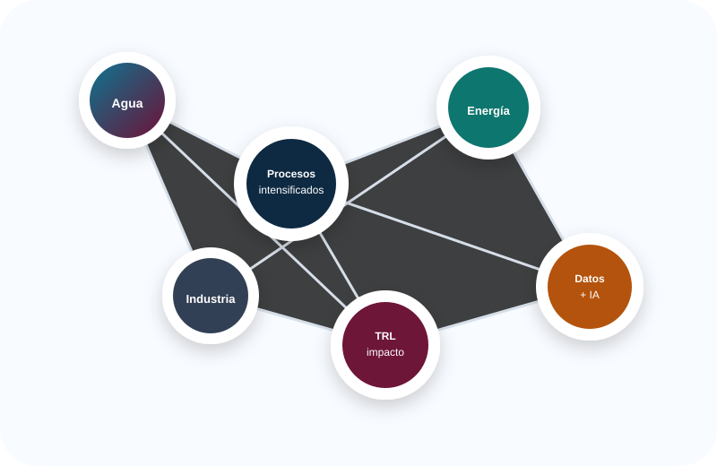
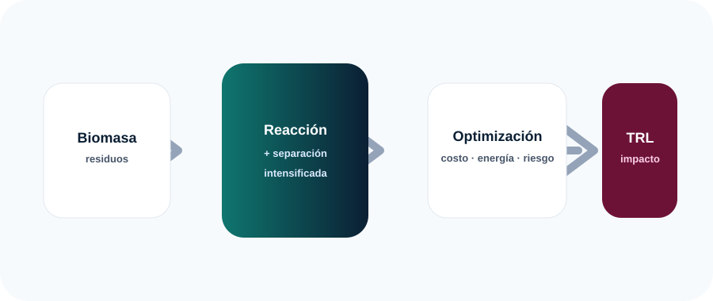

Intensificación y optimización de procesos
Diseño, síntesis, simulación, control y optimización multiobjetivo para procesos químicos más seguros, compactos y sostenibles.
Soy el Dr. Juan José Quiroz Ramírez. Diseño, modelo, optimizo e intensifico procesos para agua, energía, combustibles sostenibles, materiales y economía circular, conectando investigación de frontera con transferencia tecnológica.
Los indicadores se presentan como una versión pública y curada del Perfil Único: se priorizan logros académicos y se omiten datos personales no necesarios para difusión.
La página fue organizada para que un evaluador, colaborador industrial, estudiante o comité académico entienda en menos de un minuto qué problema resuelve la trayectoria y dónde están sus evidencias.

Diseño, síntesis, simulación, control y optimización multiobjetivo para procesos químicos más seguros, compactos y sostenibles.
Evaporadores, destiladores solares, fotocatálisis y materiales funcionales para purificación de agua y comunidades vulnerables.
Modelado y evaluación de rutas para bioturbosina, biojet fuel y valorización energética de residuos.
Modelos predictivos CNN-LSTM/LSTM para contaminación atmosférica, riesgos respiratorios y toma de decisiones públicas.
Valorización de residuos plásticos, biomasa y subproductos agroindustriales mediante simulación, evaluación tecnoeconómica y ambiental.
Dirección de tesis, cursos de posgrado, talleres y vinculación con industria, gobierno y comunidad.

Purificación sustentable de agua con destilación solar y degradación simultánea de contaminantes orgánicos.
Software con IA para anticipar PM10 e integrar datos ambientales y epidemiológicos en una aplicación web.
Modelado, control y optimización de rutas ATJ y furanos para combustibles sostenibles.
Este sitio está pensado para facilitar contacto con industria, comunidades, universidades, comités de evaluación y estudiantes interesados en procesos sustentables.